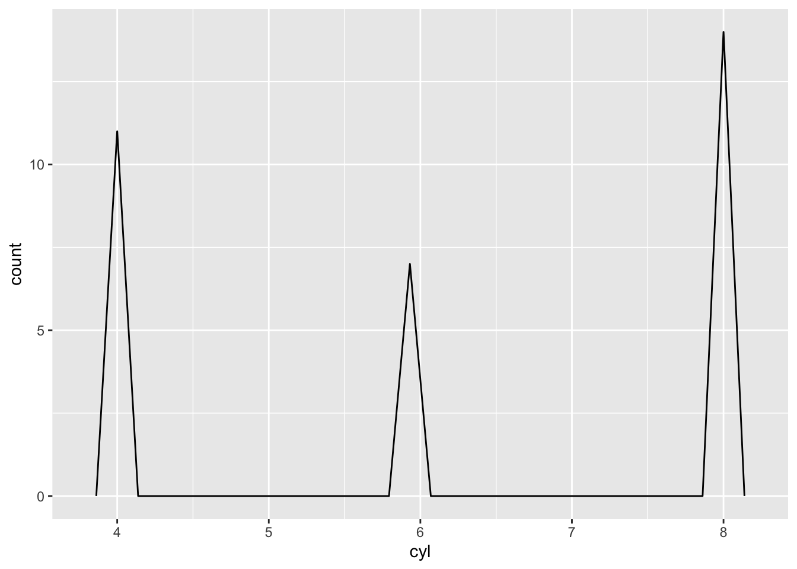
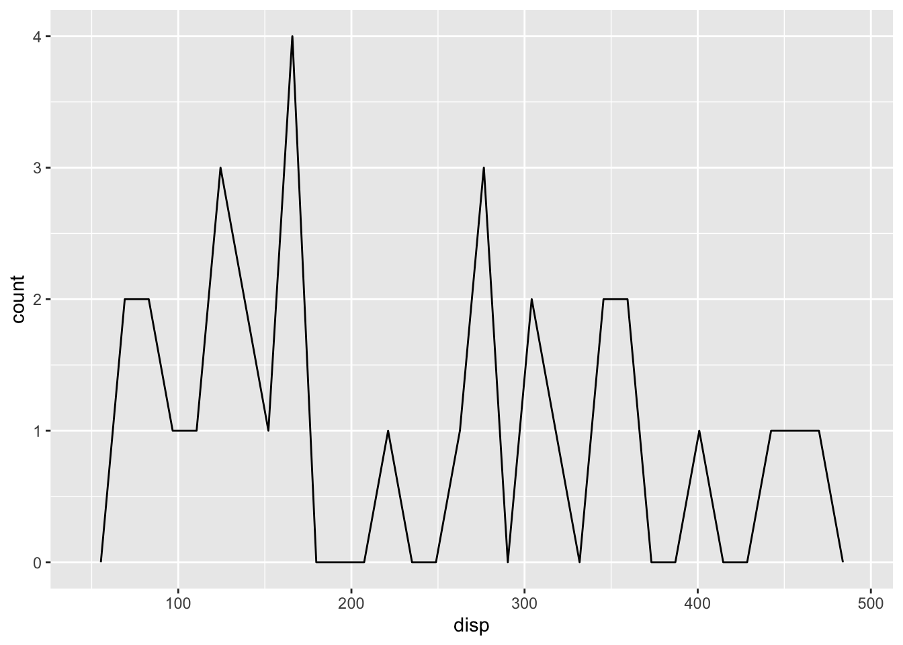

suppressPackageStartupMessages(library(tidyverse))
my_freq_plot <- function(data = mtcars, var) {
data |>
ggplot() +
aes(.data[[var]]) +
geom_freqpoly(na.rm = TRUE,
show.legend = FALSE,
bins = 30)
}
return_section <- function(data, var) {
chunk_hdr <- knitr::knit_expand(text = c("### Plot of: `{{this_var}}`",
"\n"),
this_var = var)
# Build fig.cap from ground up
fig_name <- paste0("fig-dist-", var)
fig_cap <- paste0("'Plot of responses to ", var, "'")
fig_caption <- paste0("fig.cap = ", fig_cap)
plot_chunk_hdr <- paste0("```{r ", fig_name, ", echo = FALSE, warning = FALSE, ", fig_caption, "}")
plot_chunk <- c(plot_chunk_hdr,
"print(my_freq_plot(data, var))",
"```")
knitr::knit_child(
text = c(chunk_hdr, plot_chunk),
envir = environment(),
quiet = TRUE
)
}In PSYCH 490 this week we discussed a paper (Chopik et al. 2018) that surveyed undergraduate students’ knowledge about open science practices before and after a short 1-hour lecture.
I got a bee in my bonnet about how to create a set of similar plots programmatically, using metaprogramming. The idea is to write code that creates ‘knittable’ markdown so that when the full document is rendered, you get nice looking HTML or PDF or whatever your output format happens to be.
It’s a bear to program though, because you have to keep in mind what sort of text is considered properly formatted input to each stage of the process. In fact, a functional programming approach is almost required, at least for mere mortals like me. And there are some tricks to feeding functions lists of variables embedded in a data frame in a way that they can be used in functions like ggplot() and the dplyr family. Nevertheless, he persisted. And in the end, I got it to work.
Here is a very brief example to demonstrate that I can do it again.
First, I create two helper functions.
Then I create a set of figures from the mtcars database. To keep things simple, I’ll just pick the first three variables.
these_vars <- names(mtcars)[1:3]
res <- invisible(lapply(these_vars, return_section, data = mtcars))
cat(unlist(res), sep = "\n")Plot of: mpg

Plot of: cyl

Plot of: disp

This could certainly be optimized. But it works, and it’s enough of an example that I can use it again in the future. In fact, I tweaked this example ever so slightly from the one I used for my class website. That, to me, is reproducibility.
And, if this was a document that generated a table of contents, creating level 2 (##) or 3 (###) headers this way would automatically add the subsection titles to the TOC. Sweet, eh?
Some observations about what finally worked are listed below.
Post hoc thoughts
The keys were as follows:
In
return_chunk(), generate separate text strings for the header (chunk_hdr) and the plot chunk (plot_chunk). See also the sequence for building a suitable string forfig.cap.Combine these separate pieces within
knitr::knit_child()with thetext=...parameter.In
my_freq_plot(), use theaes(.data[[var]])syntax to turn the string value forvarinto an unquoted variable in the dataset. Remember, the input toreturn_section()is an array of variable names frommtcarsas strings.In the chunk that generates the markdown, make sure to add
results="asis".
Bottom line: It’s always better to bite off smaller chunks.
And big props to (Rodrigues 2023) for getting me started on this particular journey.
References
Chopik, William J, Ryan H Bremner, Andrew M Defever, and Victor N Keller. 2018. “How (and Whether) to Teach Undergraduates about the Replication Crisis in Psychological Science.” Teaching of Psychology 45 (2): 158–63. https://doi.org/10.1177/0098628318762900.
Rodrigues, Bruno. 2023. Building Reproducible Analytical Pipelines with R. Independently published. https://www.amazon.com/Building-reproducible-analytical-pipelines-R/dp/B0C87H6MGF.